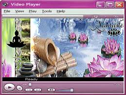

A FloraAero nasceu do desejo de criar algo diferente. Nós, Sophia e Vitor, decidimos desenvolver uma galeria dedicada à fotografia de natureza, plantas e flores, mas queríamos fugir completamente do óbvio. Quando se pensa em natureza, a mente vai direto para a cor verde — e era exatamente esse clichê que queríamos quebrar.
Um exemplo rápido do Frutiger Aero
A estética Frutiger Aero foi o estilo visual que dominou o mundo do design, da tecnologia e da publicidade entre 2004 e 2013 (aproximadamente entre o lançamento do Windows Vista e o início do iOS 7). Ela é marcada por um sentimento de otimismo tecnológico, onde o futuro parecia limpo, brilhante e perfeitamente integrado à natureza.
A ideia de usar o rosa e mergulhar na estética Frutiger Aero foi minha (Sophia). Eu sou completamente apaixonada por esse estilo. Mais especificamente, a inspiração veio de uma vertente linda chamada Frutiger Zen, que une a tecnologia e o frescor clássico dos anos 2000 com elements de meditação, calmaria, plantas e tons claros, como o rosa. O Vitor concordou com a proposta e, juntos, começamos a dar vida a esse ecossistema visual único.

Um exemplo rápido do Frutiger Zen
Nossa intenção inicial era refinar cada detalhe para entregar algo ainda mais trabalhado e bonito. No entanto, a vida real acontece e, devido a algumas complicações na minha vida pessoal, precisamos finalizar o projeto às pressas. Mesmo com os imprevistos, colocamos nosso coração na construção desta identidade.
O resultado é este espaço: um manifesto de que a natureza também pode ser vista por outros prismas, cores e sensibilidades. Esperamos que você sinta o frescor e a tranquilidade que planejamos desde o primeiro dia!